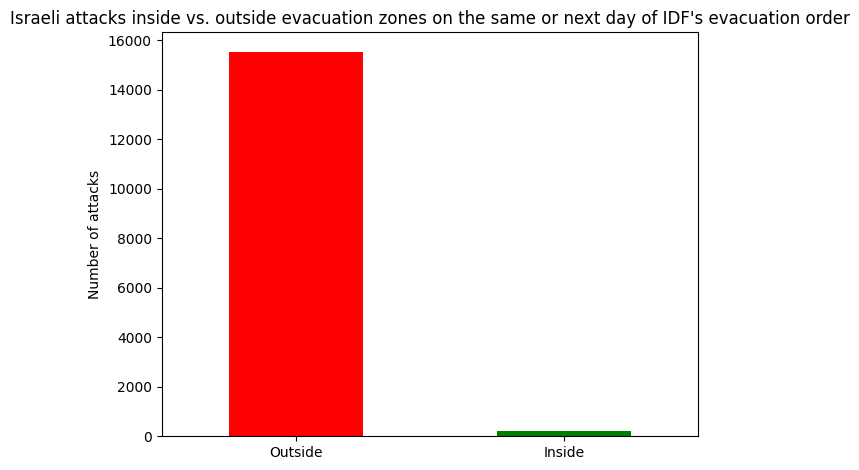

Accuracy of IDF evacuation orders in Gaza#
!pip install deep-translator langchain langchain-google-genai dotenv geopandas folium
Defaulting to user installation because normal site-packages is not writeable
Requirement already satisfied: deep-translator in /home/pepijn/.local/lib/python3.10/site-packages (1.11.4)
Requirement already satisfied: langchain in /home/pepijn/.local/lib/python3.10/site-packages (0.3.27)
Requirement already satisfied: langchain-google-genai in /home/pepijn/.local/lib/python3.10/site-packages (2.1.8)
Requirement already satisfied: dotenv in /home/pepijn/.local/lib/python3.10/site-packages (0.9.9)
Requirement already satisfied: geopandas in /home/pepijn/.local/lib/python3.10/site-packages (1.1.1)
Requirement already satisfied: folium in /home/pepijn/.local/lib/python3.10/site-packages (0.20.0)
Requirement already satisfied: beautifulsoup4<5.0.0,>=4.9.1 in /home/pepijn/.local/lib/python3.10/site-packages (from deep-translator) (4.12.2)
Requirement already satisfied: requests<3.0.0,>=2.23.0 in /home/pepijn/.local/lib/python3.10/site-packages (from deep-translator) (2.31.0)
Requirement already satisfied: soupsieve>1.2 in /home/pepijn/.local/lib/python3.10/site-packages (from beautifulsoup4<5.0.0,>=4.9.1->deep-translator) (2.5)
Requirement already satisfied: charset-normalizer<4,>=2 in /home/pepijn/.local/lib/python3.10/site-packages (from requests<3.0.0,>=2.23.0->deep-translator) (3.3.2)
Requirement already satisfied: idna<4,>=2.5 in /home/pepijn/.local/lib/python3.10/site-packages (from requests<3.0.0,>=2.23.0->deep-translator) (3.4)
Requirement already satisfied: urllib3<3,>=1.21.1 in /home/pepijn/.local/lib/python3.10/site-packages (from requests<3.0.0,>=2.23.0->deep-translator) (2.1.0)
Requirement already satisfied: certifi>=2017.4.17 in /home/pepijn/.local/lib/python3.10/site-packages (from requests<3.0.0,>=2.23.0->deep-translator) (2023.7.22)
Requirement already satisfied: langchain-core<1.0.0,>=0.3.72 in /home/pepijn/.local/lib/python3.10/site-packages (from langchain) (0.3.72)
Requirement already satisfied: langchain-text-splitters<1.0.0,>=0.3.9 in /home/pepijn/.local/lib/python3.10/site-packages (from langchain) (0.3.9)
Requirement already satisfied: langsmith>=0.1.17 in /home/pepijn/.local/lib/python3.10/site-packages (from langchain) (0.4.8)
Requirement already satisfied: pydantic<3.0.0,>=2.7.4 in /home/pepijn/.local/lib/python3.10/site-packages (from langchain) (2.11.7)
Requirement already satisfied: SQLAlchemy<3,>=1.4 in /home/pepijn/.local/lib/python3.10/site-packages (from langchain) (2.0.42)
Requirement already satisfied: PyYAML>=5.3 in /home/pepijn/.local/lib/python3.10/site-packages (from langchain) (6.0.1)
Requirement already satisfied: async-timeout<5.0.0,>=4.0.0 in /home/pepijn/.local/lib/python3.10/site-packages (from langchain) (4.0.3)
Requirement already satisfied: tenacity!=8.4.0,<10.0.0,>=8.1.0 in /home/pepijn/.local/lib/python3.10/site-packages (from langchain-core<1.0.0,>=0.3.72->langchain) (8.2.3)
Requirement already satisfied: jsonpatch<2.0,>=1.33 in /home/pepijn/.local/lib/python3.10/site-packages (from langchain-core<1.0.0,>=0.3.72->langchain) (1.33)
Requirement already satisfied: typing-extensions>=4.7 in /home/pepijn/.local/lib/python3.10/site-packages (from langchain-core<1.0.0,>=0.3.72->langchain) (4.13.2)
Requirement already satisfied: packaging>=23.2 in /home/pepijn/.local/lib/python3.10/site-packages (from langchain-core<1.0.0,>=0.3.72->langchain) (23.2)
Requirement already satisfied: jsonpointer>=1.9 in /home/pepijn/.local/lib/python3.10/site-packages (from jsonpatch<2.0,>=1.33->langchain-core<1.0.0,>=0.3.72->langchain) (2.4)
Requirement already satisfied: annotated-types>=0.6.0 in /home/pepijn/.local/lib/python3.10/site-packages (from pydantic<3.0.0,>=2.7.4->langchain) (0.7.0)
Requirement already satisfied: pydantic-core==2.33.2 in /home/pepijn/.local/lib/python3.10/site-packages (from pydantic<3.0.0,>=2.7.4->langchain) (2.33.2)
Requirement already satisfied: typing-inspection>=0.4.0 in /home/pepijn/.local/lib/python3.10/site-packages (from pydantic<3.0.0,>=2.7.4->langchain) (0.4.1)
Requirement already satisfied: greenlet>=1 in /home/pepijn/.local/lib/python3.10/site-packages (from SQLAlchemy<3,>=1.4->langchain) (3.2.2)
Requirement already satisfied: filetype<2.0.0,>=1.2.0 in /home/pepijn/.local/lib/python3.10/site-packages (from langchain-google-genai) (1.2.0)
Requirement already satisfied: google-ai-generativelanguage<0.7.0,>=0.6.18 in /home/pepijn/.local/lib/python3.10/site-packages (from langchain-google-genai) (0.6.18)
Requirement already satisfied: google-api-core!=2.0.*,!=2.1.*,!=2.10.*,!=2.2.*,!=2.3.*,!=2.4.*,!=2.5.*,!=2.6.*,!=2.7.*,!=2.8.*,!=2.9.*,<3.0.0,>=1.34.1 in /home/pepijn/.local/lib/python3.10/site-packages (from google-api-core[grpc]!=2.0.*,!=2.1.*,!=2.10.*,!=2.2.*,!=2.3.*,!=2.4.*,!=2.5.*,!=2.6.*,!=2.7.*,!=2.8.*,!=2.9.*,<3.0.0,>=1.34.1->google-ai-generativelanguage<0.7.0,>=0.6.18->langchain-google-genai) (2.25.1)
Requirement already satisfied: google-auth!=2.24.0,!=2.25.0,<3.0.0,>=2.14.1 in /home/pepijn/.local/lib/python3.10/site-packages (from google-ai-generativelanguage<0.7.0,>=0.6.18->langchain-google-genai) (2.23.4)
Requirement already satisfied: proto-plus<2.0.0,>=1.22.3 in /home/pepijn/.local/lib/python3.10/site-packages (from google-ai-generativelanguage<0.7.0,>=0.6.18->langchain-google-genai) (1.26.1)
Requirement already satisfied: protobuf!=4.21.0,!=4.21.1,!=4.21.2,!=4.21.3,!=4.21.4,!=4.21.5,<7.0.0,>=3.20.2 in /home/pepijn/.local/lib/python3.10/site-packages (from google-ai-generativelanguage<0.7.0,>=0.6.18->langchain-google-genai) (6.31.1)
Requirement already satisfied: googleapis-common-protos<2.0.0,>=1.56.2 in /home/pepijn/.local/lib/python3.10/site-packages (from google-api-core!=2.0.*,!=2.1.*,!=2.10.*,!=2.2.*,!=2.3.*,!=2.4.*,!=2.5.*,!=2.6.*,!=2.7.*,!=2.8.*,!=2.9.*,<3.0.0,>=1.34.1->google-api-core[grpc]!=2.0.*,!=2.1.*,!=2.10.*,!=2.2.*,!=2.3.*,!=2.4.*,!=2.5.*,!=2.6.*,!=2.7.*,!=2.8.*,!=2.9.*,<3.0.0,>=1.34.1->google-ai-generativelanguage<0.7.0,>=0.6.18->langchain-google-genai) (1.70.0)
Requirement already satisfied: grpcio<2.0.0,>=1.33.2 in /home/pepijn/.local/lib/python3.10/site-packages (from google-api-core[grpc]!=2.0.*,!=2.1.*,!=2.10.*,!=2.2.*,!=2.3.*,!=2.4.*,!=2.5.*,!=2.6.*,!=2.7.*,!=2.8.*,!=2.9.*,<3.0.0,>=1.34.1->google-ai-generativelanguage<0.7.0,>=0.6.18->langchain-google-genai) (1.74.0)
Requirement already satisfied: grpcio-status<2.0.0,>=1.33.2 in /home/pepijn/.local/lib/python3.10/site-packages (from google-api-core[grpc]!=2.0.*,!=2.1.*,!=2.10.*,!=2.2.*,!=2.3.*,!=2.4.*,!=2.5.*,!=2.6.*,!=2.7.*,!=2.8.*,!=2.9.*,<3.0.0,>=1.34.1->google-ai-generativelanguage<0.7.0,>=0.6.18->langchain-google-genai) (1.74.0)
Requirement already satisfied: cachetools<6.0,>=2.0.0 in /home/pepijn/.local/lib/python3.10/site-packages (from google-auth!=2.24.0,!=2.25.0,<3.0.0,>=2.14.1->google-ai-generativelanguage<0.7.0,>=0.6.18->langchain-google-genai) (5.3.2)
Requirement already satisfied: pyasn1-modules>=0.2.1 in /home/pepijn/.local/lib/python3.10/site-packages (from google-auth!=2.24.0,!=2.25.0,<3.0.0,>=2.14.1->google-ai-generativelanguage<0.7.0,>=0.6.18->langchain-google-genai) (0.3.0)
Requirement already satisfied: rsa<5,>=3.1.4 in /home/pepijn/.local/lib/python3.10/site-packages (from google-auth!=2.24.0,!=2.25.0,<3.0.0,>=2.14.1->google-ai-generativelanguage<0.7.0,>=0.6.18->langchain-google-genai) (4.9)
Requirement already satisfied: pyasn1>=0.1.3 in /home/pepijn/.local/lib/python3.10/site-packages (from rsa<5,>=3.1.4->google-auth!=2.24.0,!=2.25.0,<3.0.0,>=2.14.1->google-ai-generativelanguage<0.7.0,>=0.6.18->langchain-google-genai) (0.5.0)
Requirement already satisfied: python-dotenv in /home/pepijn/.local/lib/python3.10/site-packages (from dotenv) (1.1.1)
Requirement already satisfied: numpy>=1.24 in /home/pepijn/.local/lib/python3.10/site-packages (from geopandas) (2.2.6)
Requirement already satisfied: pyogrio>=0.7.2 in /home/pepijn/.local/lib/python3.10/site-packages (from geopandas) (0.11.0)
Requirement already satisfied: pandas>=2.0.0 in /home/pepijn/.local/lib/python3.10/site-packages (from geopandas) (2.3.1)
Requirement already satisfied: pyproj>=3.5.0 in /home/pepijn/.local/lib/python3.10/site-packages (from geopandas) (3.7.1)
Requirement already satisfied: shapely>=2.0.0 in /home/pepijn/.local/lib/python3.10/site-packages (from geopandas) (2.1.1)
Requirement already satisfied: branca>=0.6.0 in /home/pepijn/.local/lib/python3.10/site-packages (from folium) (0.8.1)
Requirement already satisfied: jinja2>=2.9 in /home/pepijn/.local/lib/python3.10/site-packages (from folium) (3.1.2)
Requirement already satisfied: xyzservices in /home/pepijn/.local/lib/python3.10/site-packages (from folium) (2025.4.0)
Requirement already satisfied: MarkupSafe>=2.0 in /home/pepijn/.local/lib/python3.10/site-packages (from jinja2>=2.9->folium) (2.1.3)
Requirement already satisfied: httpx<1,>=0.23.0 in /home/pepijn/.local/lib/python3.10/site-packages (from langsmith>=0.1.17->langchain) (0.28.1)
Requirement already satisfied: orjson<4.0.0,>=3.9.14 in /home/pepijn/.local/lib/python3.10/site-packages (from langsmith>=0.1.17->langchain) (3.11.1)
Requirement already satisfied: requests-toolbelt<2.0.0,>=1.0.0 in /home/pepijn/.local/lib/python3.10/site-packages (from langsmith>=0.1.17->langchain) (1.0.0)
Requirement already satisfied: zstandard<0.24.0,>=0.23.0 in /home/pepijn/.local/lib/python3.10/site-packages (from langsmith>=0.1.17->langchain) (0.23.0)
Requirement already satisfied: anyio in /home/pepijn/.local/lib/python3.10/site-packages (from httpx<1,>=0.23.0->langsmith>=0.1.17->langchain) (4.0.0)
Requirement already satisfied: httpcore==1.* in /home/pepijn/.local/lib/python3.10/site-packages (from httpx<1,>=0.23.0->langsmith>=0.1.17->langchain) (1.0.9)
Requirement already satisfied: h11>=0.16 in /home/pepijn/.local/lib/python3.10/site-packages (from httpcore==1.*->httpx<1,>=0.23.0->langsmith>=0.1.17->langchain) (0.16.0)
Requirement already satisfied: python-dateutil>=2.8.2 in /home/pepijn/.local/lib/python3.10/site-packages (from pandas>=2.0.0->geopandas) (2.8.2)
Requirement already satisfied: pytz>=2020.1 in /usr/lib/python3/dist-packages (from pandas>=2.0.0->geopandas) (2022.1)
Requirement already satisfied: tzdata>=2022.7 in /home/pepijn/.local/lib/python3.10/site-packages (from pandas>=2.0.0->geopandas) (2023.3)
Requirement already satisfied: six>=1.5 in /home/pepijn/.local/lib/python3.10/site-packages (from python-dateutil>=2.8.2->pandas>=2.0.0->geopandas) (1.16.0)
Requirement already satisfied: sniffio>=1.1 in /home/pepijn/.local/lib/python3.10/site-packages (from anyio->httpx<1,>=0.23.0->langsmith>=0.1.17->langchain) (1.3.0)
Requirement already satisfied: exceptiongroup>=1.0.2 in /home/pepijn/.local/lib/python3.10/site-packages (from anyio->httpx<1,>=0.23.0->langsmith>=0.1.17->langchain) (1.1.3)
# Install dependencies
import os
import time
import asyncio
from dotenv import load_dotenv
import re
import pandas as pd
from deep_translator import GoogleTranslator
from datetime import datetime, timedelta
from langchain_google_genai import GoogleGenerativeAI
from langchain_core.prompts import PromptTemplate
from langchain.chains import LLMChain
import geopandas as gpd
import folium
from shapely.ops import unary_union
from shapely.geometry import MultiPolygon
from shapely.geometry import Point
import matplotlib.pyplot as plt
A module that was compiled using NumPy 1.x cannot be run in
NumPy 2.2.6 as it may crash. To support both 1.x and 2.x
versions of NumPy, modules must be compiled with NumPy 2.0.
Some module may need to rebuild instead e.g. with 'pybind11>=2.12'.
If you are a user of the module, the easiest solution will be to
downgrade to 'numpy<2' or try to upgrade the affected module.
We expect that some modules will need time to support NumPy 2.
Traceback (most recent call last): File "/usr/lib/python3.10/runpy.py", line 196, in _run_module_as_main
return _run_code(code, main_globals, None,
File "/usr/lib/python3.10/runpy.py", line 86, in _run_code
exec(code, run_globals)
File "/home/pepijn/.local/lib/python3.10/site-packages/ipykernel_launcher.py", line 17, in <module>
app.launch_new_instance()
File "/home/pepijn/.local/lib/python3.10/site-packages/traitlets/config/application.py", line 1053, in launch_instance
app.start()
File "/home/pepijn/.local/lib/python3.10/site-packages/ipykernel/kernelapp.py", line 737, in start
self.io_loop.start()
File "/home/pepijn/.local/lib/python3.10/site-packages/tornado/platform/asyncio.py", line 195, in start
self.asyncio_loop.run_forever()
File "/usr/lib/python3.10/asyncio/base_events.py", line 603, in run_forever
self._run_once()
File "/usr/lib/python3.10/asyncio/base_events.py", line 1909, in _run_once
handle._run()
File "/usr/lib/python3.10/asyncio/events.py", line 80, in _run
self._context.run(self._callback, *self._args)
File "/home/pepijn/.local/lib/python3.10/site-packages/ipykernel/kernelbase.py", line 524, in dispatch_queue
await self.process_one()
File "/home/pepijn/.local/lib/python3.10/site-packages/ipykernel/kernelbase.py", line 513, in process_one
await dispatch(*args)
File "/home/pepijn/.local/lib/python3.10/site-packages/ipykernel/kernelbase.py", line 418, in dispatch_shell
await result
File "/home/pepijn/.local/lib/python3.10/site-packages/ipykernel/kernelbase.py", line 758, in execute_request
reply_content = await reply_content
File "/home/pepijn/.local/lib/python3.10/site-packages/ipykernel/ipkernel.py", line 426, in do_execute
res = shell.run_cell(
File "/home/pepijn/.local/lib/python3.10/site-packages/ipykernel/zmqshell.py", line 549, in run_cell
return super().run_cell(*args, **kwargs)
File "/home/pepijn/.local/lib/python3.10/site-packages/IPython/core/interactiveshell.py", line 3046, in run_cell
result = self._run_cell(
File "/home/pepijn/.local/lib/python3.10/site-packages/IPython/core/interactiveshell.py", line 3101, in _run_cell
result = runner(coro)
File "/home/pepijn/.local/lib/python3.10/site-packages/IPython/core/async_helpers.py", line 129, in _pseudo_sync_runner
coro.send(None)
File "/home/pepijn/.local/lib/python3.10/site-packages/IPython/core/interactiveshell.py", line 3306, in run_cell_async
has_raised = await self.run_ast_nodes(code_ast.body, cell_name,
File "/home/pepijn/.local/lib/python3.10/site-packages/IPython/core/interactiveshell.py", line 3488, in run_ast_nodes
if await self.run_code(code, result, async_=asy):
File "/home/pepijn/.local/lib/python3.10/site-packages/IPython/core/interactiveshell.py", line 3548, in run_code
exec(code_obj, self.user_global_ns, self.user_ns)
File "/tmp/ipykernel_23075/1015393997.py", line 7, in <module>
import pandas as pd
File "/home/pepijn/.local/lib/python3.10/site-packages/pandas/__init__.py", line 26, in <module>
from pandas.compat import (
File "/home/pepijn/.local/lib/python3.10/site-packages/pandas/compat/__init__.py", line 27, in <module>
from pandas.compat.pyarrow import (
File "/home/pepijn/.local/lib/python3.10/site-packages/pandas/compat/pyarrow.py", line 8, in <module>
import pyarrow as pa
File "/home/pepijn/.local/lib/python3.10/site-packages/pyarrow/__init__.py", line 65, in <module>
import pyarrow.lib as _lib
---------------------------------------------------------------------------
AttributeError Traceback (most recent call last)
AttributeError: _ARRAY_API not found
A module that was compiled using NumPy 1.x cannot be run in
NumPy 2.2.6 as it may crash. To support both 1.x and 2.x
versions of NumPy, modules must be compiled with NumPy 2.0.
Some module may need to rebuild instead e.g. with 'pybind11>=2.12'.
If you are a user of the module, the easiest solution will be to
downgrade to 'numpy<2' or try to upgrade the affected module.
We expect that some modules will need time to support NumPy 2.
Traceback (most recent call last): File "/usr/lib/python3.10/runpy.py", line 196, in _run_module_as_main
return _run_code(code, main_globals, None,
File "/usr/lib/python3.10/runpy.py", line 86, in _run_code
exec(code, run_globals)
File "/home/pepijn/.local/lib/python3.10/site-packages/ipykernel_launcher.py", line 17, in <module>
app.launch_new_instance()
File "/home/pepijn/.local/lib/python3.10/site-packages/traitlets/config/application.py", line 1053, in launch_instance
app.start()
File "/home/pepijn/.local/lib/python3.10/site-packages/ipykernel/kernelapp.py", line 737, in start
self.io_loop.start()
File "/home/pepijn/.local/lib/python3.10/site-packages/tornado/platform/asyncio.py", line 195, in start
self.asyncio_loop.run_forever()
File "/usr/lib/python3.10/asyncio/base_events.py", line 603, in run_forever
self._run_once()
File "/usr/lib/python3.10/asyncio/base_events.py", line 1909, in _run_once
handle._run()
File "/usr/lib/python3.10/asyncio/events.py", line 80, in _run
self._context.run(self._callback, *self._args)
File "/home/pepijn/.local/lib/python3.10/site-packages/ipykernel/kernelbase.py", line 524, in dispatch_queue
await self.process_one()
File "/home/pepijn/.local/lib/python3.10/site-packages/ipykernel/kernelbase.py", line 513, in process_one
await dispatch(*args)
File "/home/pepijn/.local/lib/python3.10/site-packages/ipykernel/kernelbase.py", line 418, in dispatch_shell
await result
File "/home/pepijn/.local/lib/python3.10/site-packages/ipykernel/kernelbase.py", line 758, in execute_request
reply_content = await reply_content
File "/home/pepijn/.local/lib/python3.10/site-packages/ipykernel/ipkernel.py", line 426, in do_execute
res = shell.run_cell(
File "/home/pepijn/.local/lib/python3.10/site-packages/ipykernel/zmqshell.py", line 549, in run_cell
return super().run_cell(*args, **kwargs)
File "/home/pepijn/.local/lib/python3.10/site-packages/IPython/core/interactiveshell.py", line 3046, in run_cell
result = self._run_cell(
File "/home/pepijn/.local/lib/python3.10/site-packages/IPython/core/interactiveshell.py", line 3101, in _run_cell
result = runner(coro)
File "/home/pepijn/.local/lib/python3.10/site-packages/IPython/core/async_helpers.py", line 129, in _pseudo_sync_runner
coro.send(None)
File "/home/pepijn/.local/lib/python3.10/site-packages/IPython/core/interactiveshell.py", line 3306, in run_cell_async
has_raised = await self.run_ast_nodes(code_ast.body, cell_name,
File "/home/pepijn/.local/lib/python3.10/site-packages/IPython/core/interactiveshell.py", line 3488, in run_ast_nodes
if await self.run_code(code, result, async_=asy):
File "/home/pepijn/.local/lib/python3.10/site-packages/IPython/core/interactiveshell.py", line 3548, in run_code
exec(code_obj, self.user_global_ns, self.user_ns)
File "/tmp/ipykernel_23075/1015393997.py", line 7, in <module>
import pandas as pd
File "/home/pepijn/.local/lib/python3.10/site-packages/pandas/__init__.py", line 49, in <module>
from pandas.core.api import (
File "/home/pepijn/.local/lib/python3.10/site-packages/pandas/core/api.py", line 9, in <module>
from pandas.core.dtypes.dtypes import (
File "/home/pepijn/.local/lib/python3.10/site-packages/pandas/core/dtypes/dtypes.py", line 24, in <module>
from pandas._libs import (
File "/home/pepijn/.local/lib/python3.10/site-packages/pyarrow/__init__.py", line 65, in <module>
import pyarrow.lib as _lib
---------------------------------------------------------------------------
AttributeError Traceback (most recent call last)
AttributeError: _ARRAY_API not found
/home/pepijn/.local/lib/python3.10/site-packages/matplotlib/projections/__init__.py:63: UserWarning: Unable to import Axes3D. This may be due to multiple versions of Matplotlib being installed (e.g. as a system package and as a pip package). As a result, the 3D projection is not available.
warnings.warn("Unable to import Axes3D. This may be due to multiple versions of "
1. Displacements#
The Gaza Maps project maintains a database of all known IDF evacuation orders issued on official IDF Arabic channels.
Note: For the CSV
displacement_updated.csvwe manually added rows containing metadata about evacuation orders found on IDF leaflets dropped over Gaza.
# Load the displacement data
displacement = pd.read_csv("data/csv/displacement_updated.csv")
displacement.info()
<class 'pandas.core.frame.DataFrame'>
RangeIndex: 112 entries, 0 to 111
Data columns (total 21 columns):
# Column Non-Null Count Dtype
--- ------ -------------- -----
0 date 112 non-null object
1 x_source 96 non-null object
2 x_text 96 non-null object
3 x_text_translated 96 non-null object
4 x_timestamp_utc3 96 non-null object
5 evacuation_zone_prompt 109 non-null object
6 facebook_source 22 non-null object
7 facebook_timestamp_utc3 22 non-null object
8 leaflet 19 non-null object
9 leaflet_text_translated 18 non-null object
10 safezone_prompt 109 non-null object
11 link 98 non-null object
12 map_idf 98 non-null object
13 map_full 82 non-null object
14 map_zoom 82 non-null object
15 displacement_blocks 88 non-null object
16 labeled_safe_blocks 31 non-null object
17 evacuation_zone 112 non-null object
18 safezone 112 non-null object
19 area_sq_km_displacement 98 non-null float64
20 area_sq_km_labeled_safe 98 non-null float64
dtypes: float64(2), object(19)
memory usage: 18.5+ KB
Data cleaning#
Remove the URL at the end of every tweet in the column
x_text.Translate every tweet from Arabic to English, creating a new column
x_text_translated.Convert the column
x_timestampto UTC+3, which is the timezone in Gaza.
def remove_urls(text):
"""Remove all URLs from the text."""
if pd.isna(text) or not isinstance(text, str):
return text # Leave non-string types unchanged
return re.sub(r'https://\S+', '', text).strip()
def arabic_to_english(text):
"""Translate Arabic text to English."""
if pd.isna(text) or not isinstance(text, str):
return text
try:
return GoogleTranslator(source='ar', target='en').translate(text)
except Exception as e:
print(f"Error translating text: {text} - {e}")
return text
def convert_date(time_str):
"""Convert a Twitter-style timestamp to hour:minute in UTC+3."""
if pd.isna(time_str) or not isinstance(time_str, str):
return time_str
try:
# Parse the original UTC datetime string
dt = datetime.strptime(time_str, "%a %b %d %H:%M:%S %z %Y")
# Add 3 hours to get UTC+3
dt_utc3 = dt + timedelta(hours=3)
# Format hour and minute
time_formatted = dt_utc3.strftime("%H:%M")
return time_formatted
except Exception as e:
print(f"Skipping malformed timestamp '{time_str}': {e}")
return time_str
def clean_displacement_blocks(block):
"""
Convert a comma-separated string of numbers (ints or floats)
to integers (as strings), removing decimals.
"""
if not isinstance(block, str):
return block # Skip non-string entries (e.g. NaN)
cleaned = []
for item in block.split(","):
item = item.strip()
if item == "":
continue
try:
# Convert to float, then to int (removes decimals)
number = int(float(item))
cleaned.append(str(number))
except ValueError:
cleaned.append(item) # keep original if not a number
return ", ".join(cleaned)
# Remove URLs from the tweet text
displacement['x_text'] = displacement['x_text'].apply(remove_urls)
# Translate Arabic tweets to English
# displacement['x_text_translated'] = displacement['x_text'].apply(arabic_to_english)
# Convert the timestamp to UTC+3 hour:minute format
# displacement['x_timestamp_utc3'] = displacement['x_timestamp'].apply(convert_date)
# Clean the block numbers
displacement["displacement_blocks"] = displacement["displacement_blocks"].apply(clean_displacement_blocks)
# Remove useless columns
displacement = displacement.drop(['evacuation_zone_prompt', 'safezone_prompt', 'map_full', 'map_zoom'], axis=1)
displacement.head(3)
| date | x_source | x_text | x_text_translated | x_timestamp_utc3 | facebook_source | facebook_timestamp_utc3 | leaflet | leaflet_text_translated | link | map_idf | displacement_blocks | labeled_safe_blocks | evacuation_zone | safezone | area_sq_km_displacement | area_sq_km_labeled_safe | |
|---|---|---|---|---|---|---|---|---|---|---|---|---|---|---|---|---|---|
| 0 | 2025-06-02 | https://x.com/AvichayAdraee/status/19295702495... | #عاجل ‼️ إلى جميع المتواجدين في البلوكات 47, 1... | To all those present in blocks 47, 106, 108, 1... | 19:06 | https://www.facebook.com/IDFarabicAvichayAdrae... | 19:07 | NaN | NaN | https://gazamaps.com/displacement/108 | https://gazamaps.com/storage/displacement-maps... | 1, 2, 3, 4, 5, 6, 7, 8, 9, 10, 11, 12, 13, 14,... | NaN | Khan Yunis Governate | Al Mawasi | 169.29 | 0.0 |
| 1 | 2025-05-31 | https://x.com/avichayadraee/status/19288790357... | #عاجل ‼️إلى جميع سكان خانيونس وبني سهيلا وعبسا... | To all residents of Khan Yunis, Bani Suhaila a... | 21:19 | NaN | NaN | NaN | NaN | https://gazamaps.com/displacement/107 | https://gazamaps.com/storage/displacement-maps... | 1, 2, 3, 4, 5, 6, 7, 8, 9, 10, 11, 12, 13, 14,... | NaN | Khan Yunis, Bani Suhaila, Abasan | Mawasi | 168.36 | 0.0 |
| 2 | 2025-05-29 | https://x.com/avichayadraee/status/19281887521... | #عاجل ‼️ الى جميع سكان قطاع غزة المتواجدين في ... | To all residents of the Gaza Strip located in ... | 23:36 | NaN | NaN | NaN | NaN | https://gazamaps.com/displacement/106 | https://gazamaps.com/storage/displacement-maps... | 321, 568, 569, 570, 571, 572, 573, 574, 575, 5... | NaN | Gaza Strip, Al-Atatra, Jabalia Al-Balad, Shuj... | west | 95.31 | 0.0 |
The tweet text x_text_translated contains the names of the locations designated to be evacuated, and the locations where residents should find shelter. We will use an LLM to extract these locations and put them in separate columns for further analysis.
Note: Method currently not working. We used the SheetGPT extension for Google Sheets instead with the same prompts.
try:
# Load Google Gemini API key
dotenv_path = os.path.abspath(os.path.join(os.getcwd(), '..', '.env'))
load_dotenv(dotenv_path)
google_api_key = os.getenv("GOOGLE_API_KEY")
except:
google_api_key = input("Your Google API key: ")
# Set up the LLM
llm = GoogleGenerativeAI(model="gemini-2.0-flash", google_api_key=google_api_key)
# Global delay tracker
last_call_time = 0
async def throttled_llm_run(chain, input_data, delay=4):
"""Run LLM chain with rate limit delay (default: 4 seconds)."""
global last_call_time
now = time.time()
time_since_last = now - last_call_time
if time_since_last < delay:
await asyncio.sleep(delay - time_since_last)
try:
result = chain.run(x_text_translated=input_data).strip()
last_call_time = time.time() # Update the last call time
return result
except Exception as e:
print(f"Error running LLM chain: {e}")
return None
---------------------------------------------------------------------------
DefaultCredentialsError Traceback (most recent call last)
Cell In[6], line 11
8 google_api_key = input("Your Google API key: ")
10 # Set up the LLM
---> 11 llm = GoogleGenerativeAI(model="gemini-2.0-flash", google_api_key=google_api_key)
13 # Global delay tracker
14 last_call_time = 0
File ~/.local/lib/python3.10/site-packages/langchain_google_genai/llms.py:60, in GoogleGenerativeAI.__init__(self, **kwargs)
53 suggestion = (
54 f" Did you mean: '{suggestions[0]}'?" if suggestions else ""
55 )
56 logger.warning(
57 f"Unexpected argument '{arg}' "
58 f"provided to GoogleGenerativeAI.{suggestion}"
59 )
---> 60 super().__init__(**kwargs)
File ~/.local/lib/python3.10/site-packages/langchain_core/load/serializable.py:130, in Serializable.__init__(self, *args, **kwargs)
128 def __init__(self, *args: Any, **kwargs: Any) -> None:
129 """""" # noqa: D419
--> 130 super().__init__(*args, **kwargs)
[... skipping hidden 1 frame]
File ~/.local/lib/python3.10/site-packages/langchain_google_genai/llms.py:69, in GoogleGenerativeAI.validate_environment(self)
66 if not any(self.model.startswith(prefix) for prefix in ("models/",)):
67 self.model = f"models/{self.model}"
---> 69 self.client = ChatGoogleGenerativeAI(
70 api_key=self.google_api_key,
71 credentials=self.credentials,
72 temperature=self.temperature,
73 top_p=self.top_p,
74 top_k=self.top_k,
75 max_tokens=self.max_output_tokens,
76 timeout=self.timeout,
77 model=self.model,
78 client_options=self.client_options,
79 transport=self.transport,
80 additional_headers=self.additional_headers,
81 safety_settings=self.safety_settings,
82 )
84 return self
File ~/.local/lib/python3.10/site-packages/langchain_google_genai/chat_models.py:1189, in ChatGoogleGenerativeAI.__init__(self, **kwargs)
1182 suggestion = (
1183 f" Did you mean: '{suggestions[0]}'?" if suggestions else ""
1184 )
1185 logger.warning(
1186 f"Unexpected argument '{arg}' "
1187 f"provided to ChatGoogleGenerativeAI.{suggestion}"
1188 )
-> 1189 super().__init__(**kwargs)
File ~/.local/lib/python3.10/site-packages/langchain_core/load/serializable.py:130, in Serializable.__init__(self, *args, **kwargs)
128 def __init__(self, *args: Any, **kwargs: Any) -> None:
129 """""" # noqa: D419
--> 130 super().__init__(*args, **kwargs)
[... skipping hidden 1 frame]
File ~/.local/lib/python3.10/site-packages/langchain_google_genai/chat_models.py:1248, in ChatGoogleGenerativeAI.validate_environment(self)
1246 google_api_key = self.google_api_key
1247 transport: Optional[str] = self.transport
-> 1248 self.client = genaix.build_generative_service(
1249 credentials=self.credentials,
1250 api_key=google_api_key,
1251 client_info=client_info,
1252 client_options=self.client_options,
1253 transport=transport,
1254 )
1255 self.async_client_running = None
1256 return self
File ~/.local/lib/python3.10/site-packages/langchain_google_genai/_genai_extension.py:276, in build_generative_service(credentials, api_key, client_options, client_info, transport)
262 def build_generative_service(
263 credentials: Optional[credentials.Credentials] = None,
264 api_key: Optional[str] = None,
(...)
267 transport: Optional[str] = None,
268 ) -> v1betaGenerativeServiceClient:
269 config = _prepare_config(
270 credentials=credentials,
271 api_key=api_key,
(...)
274 client_info=client_info,
275 )
--> 276 return v1betaGenerativeServiceClient(**config)
File ~/.local/lib/python3.10/site-packages/google/ai/generativelanguage_v1beta/services/generative_service/client.py:697, in GenerativeServiceClient.__init__(self, credentials, transport, client_options, client_info)
688 transport_init: Union[
689 Type[GenerativeServiceTransport],
690 Callable[..., GenerativeServiceTransport],
(...)
694 else cast(Callable[..., GenerativeServiceTransport], transport)
695 )
696 # initialize with the provided callable or the passed in class
--> 697 self._transport = transport_init(
698 credentials=credentials,
699 credentials_file=self._client_options.credentials_file,
700 host=self._api_endpoint,
701 scopes=self._client_options.scopes,
702 client_cert_source_for_mtls=self._client_cert_source,
703 quota_project_id=self._client_options.quota_project_id,
704 client_info=client_info,
705 always_use_jwt_access=True,
706 api_audience=self._client_options.api_audience,
707 )
709 if "async" not in str(self._transport):
710 if CLIENT_LOGGING_SUPPORTED and _LOGGER.isEnabledFor(
711 std_logging.DEBUG
712 ): # pragma: NO COVER
File ~/.local/lib/python3.10/site-packages/google/ai/generativelanguage_v1beta/services/generative_service/transports/grpc.py:234, in GenerativeServiceGrpcTransport.__init__(self, host, credentials, credentials_file, scopes, channel, api_mtls_endpoint, client_cert_source, ssl_channel_credentials, client_cert_source_for_mtls, quota_project_id, client_info, always_use_jwt_access, api_audience)
229 self._ssl_channel_credentials = grpc.ssl_channel_credentials(
230 certificate_chain=cert, private_key=key
231 )
233 # The base transport sets the host, credentials and scopes
--> 234 super().__init__(
235 host=host,
236 credentials=credentials,
237 credentials_file=credentials_file,
238 scopes=scopes,
239 quota_project_id=quota_project_id,
240 client_info=client_info,
241 always_use_jwt_access=always_use_jwt_access,
242 api_audience=api_audience,
243 )
245 if not self._grpc_channel:
246 # initialize with the provided callable or the default channel
247 channel_init = channel or type(self).create_channel
File ~/.local/lib/python3.10/site-packages/google/ai/generativelanguage_v1beta/services/generative_service/transports/base.py:100, in GenerativeServiceTransport.__init__(self, host, credentials, credentials_file, scopes, quota_project_id, client_info, always_use_jwt_access, api_audience, **kwargs)
96 credentials, _ = google.auth.load_credentials_from_file(
97 credentials_file, **scopes_kwargs, quota_project_id=quota_project_id
98 )
99 elif credentials is None and not self._ignore_credentials:
--> 100 credentials, _ = google.auth.default(
101 **scopes_kwargs, quota_project_id=quota_project_id
102 )
103 # Don't apply audience if the credentials file passed from user.
104 if hasattr(credentials, "with_gdch_audience"):
File ~/.local/lib/python3.10/site-packages/google/auth/_default.py:691, in default(scopes, request, quota_project_id, default_scopes)
683 _LOGGER.warning(
684 "No project ID could be determined. Consider running "
685 "`gcloud config set project` or setting the %s "
686 "environment variable",
687 environment_vars.PROJECT,
688 )
689 return credentials, effective_project_id
--> 691 raise exceptions.DefaultCredentialsError(_CLOUD_SDK_MISSING_CREDENTIALS)
DefaultCredentialsError: Your default credentials were not found. To set up Application Default Credentials, see https://cloud.google.com/docs/authentication/external/set-up-adc for more information.
async def extract_evacuations(row):
"""Function to extract the names of locations designated to be evacuated from a tweet."""
prompt = PromptTemplate.from_template("""
You will be given a tweet containing an evacuation order to people in specific locations.
Name the affected locations (not the block numbers, if present in the tweet) where people are ordered to evacuate from, separated by commas.
If the location names where people should evacuate from are not mentioned in the tweet, answer "Unknown".
Do not include the area which people are ordered to evacuate to.
Tweet: {x_text_translated}
""")
chain = LLMChain(llm=llm, prompt=prompt)
if isinstance(row['x_text_translated'], str):
# Prompt the LLM to extract evacuation locations
return await throttled_llm_run(chain, row['x_text_translated'])
return None
async def extract_safezones(row):
"""Function to extract the names of safe zones from a tweet."""
prompt = PromptTemplate.from_template("""
You will be given a tweet containing an evacuation order to people in specific locations.
Name the safe zones (not the block numbers, if present in the tweet) where people are ordered to evacuate to, separated by commas.
If the safe zones where people should evacuate to are not mentioned in the tweet, answer "Unknown".
Do not include the area which people are ordered to evacuate from.
Tweet: {x_text_translated}
""")
chain = LLMChain(llm=llm, prompt=prompt)
if isinstance(row['x_text_translated'], str):
# Prompt the LLM to extract safe zone locations
return await throttled_llm_run(chain, row['x_text_translated'])
return None
# Extract evacuation locations from the translated tweets
# displacement["locations"] = displacement.apply(extract_evacuations, axis=1)
# Extract safe zones from the translated tweets
# displacement["safezones"] = displacement.apply(extract_safezones, axis=1)
2. Political violence events#
ACLED’s Gaza Monitor contains a map and accompanying dataset of all political violence events, demonstration events, and strategic developments recorded in Israel and Palestine started from 7 October 2023.
# Load the ACLED data
acled = pd.read_csv("data/csv/acled_may23.csv")
acled.info()
<class 'pandas.core.frame.DataFrame'>
RangeIndex: 90242 entries, 0 to 90241
Data columns (total 31 columns):
# Column Non-Null Count Dtype
--- ------ -------------- -----
0 event_id_cnty 90242 non-null object
1 event_date 90242 non-null object
2 year 90242 non-null int64
3 time_precision 90242 non-null int64
4 disorder_type 90242 non-null object
5 event_type 90242 non-null object
6 sub_event_type 90242 non-null object
7 actor1 90242 non-null object
8 assoc_actor_1 20743 non-null object
9 inter1 90242 non-null object
10 actor2 66166 non-null object
11 assoc_actor_2 16778 non-null object
12 inter2 66166 non-null object
13 interaction 90242 non-null object
14 civilian_targeting 21230 non-null object
15 iso 90242 non-null int64
16 region 90242 non-null object
17 country 90242 non-null object
18 admin1 90176 non-null object
19 admin2 90129 non-null object
20 admin3 17160 non-null object
21 location 90242 non-null object
22 latitude 90242 non-null float64
23 longitude 90242 non-null float64
24 geo_precision 90242 non-null int64
25 source 90242 non-null object
26 source_scale 90242 non-null object
27 notes 90242 non-null object
28 fatalities 90242 non-null int64
29 tags 39009 non-null object
30 timestamp 90242 non-null int64
dtypes: float64(2), int64(6), object(23)
memory usage: 21.3+ MB
Data cleaning#
The ACLED Codebook contains more information about how ACLED codes and catagorizes data. Based on this we will filter the dataset to only include battles, explosions/remote violence and violence against civilians by the IDF in Gaza after 7 October 2023:
Only include dates in the column
event_dateafter 2023-10-07.Only include datapoints for ‘Political violence’ in the column
disorder_type. Only include the following subcategories within the columnevent_type:Battles
Explosions/Remote violence
Violence against civilians
Only include datapoints that contain ‘Military Forces of Israel’ in the column
actor1.Only include datapoints for the location ‘Gaza Strip’ in the column
admin1.
# Ensure event_date is in datetime format
acled["event_date"] = pd.to_datetime(acled["event_date"], errors='coerce')
# Filter events types
event_types = ["Battles", "Explosions/Remote violence", "Violence against civilians"]
# Apply filters
acled_filtered = acled[
(acled["event_date"] > pd.Timestamp("2023-10-07")) &
(acled["disorder_type"] == "Political violence") &
(acled["event_type"].isin(event_types)) &
(acled["actor1"].str.contains("Military Forces of Israel", na=False)) &
(acled["admin1"] == "Gaza Strip")
]
acled_filtered.head(3)
| event_id_cnty | event_date | year | time_precision | disorder_type | event_type | sub_event_type | actor1 | assoc_actor_1 | inter1 | ... | location | latitude | longitude | geo_precision | source | source_scale | notes | fatalities | tags | timestamp | |
|---|---|---|---|---|---|---|---|---|---|---|---|---|---|---|---|---|---|---|---|---|---|
| 4 | PSE74167 | 2025-05-23 | 2025 | 1 | Political violence | Explosions/Remote violence | Air/drone strike | Military Forces of Israel (2022-) | NaN | External/Other forces | ... | Jabalya | 31.5272 | 34.4835 | 2 | Newpress; Palestine News and Information Agenc... | New media-National | On 23 May 2025, Israeli warplanes targeted a g... | 3 | NaN | 1748304023 |
| 5 | PSE74182 | 2025-05-23 | 2025 | 1 | Political violence | Explosions/Remote violence | Air/drone strike | Military Forces of Israel (2022-) | NaN | External/Other forces | ... | Gaza - Southern Remal | 31.5168 | 34.4355 | 2 | Quds News Network | National | On 23 May 2025, Israeli warplanes targeted sev... | 0 | NaN | 1748304023 |
| 6 | PSE74194 | 2025-05-23 | 2025 | 1 | Political violence | Explosions/Remote violence | Air/drone strike | Military Forces of Israel (2022-) | NaN | External/Other forces | ... | An Nusayrat | 31.4486 | 34.3925 | 1 | Palestine News and Information Agency; Quds Ne... | National | On 23 May 2025, Israeli warplanes targeted the... | 3 | NaN | 1748304023 |
3 rows × 31 columns
3. Mapping the block numbers to coordinates#
The idf_blocks.geojson file provides polygon coordinates for each of the block numbers designated by the IDF. We will attach the coordinates from the GEOJSON to the corresponding block numbers in the displacement DataFrame.
gdf = gpd.read_file("data/json/idf_blocks.geojson")
gdf.head(3)
| descriptio | remarks | population | block | wkt | manpower_e | הערות | חמולה | כמותמ | כמותת | ... | צפיפו | שטחבמ | שטחבק | sum_tkifot | last_updat | צפיפ_1 | num_reside | st_area_sh | st_length_ | geometry | |
|---|---|---|---|---|---|---|---|---|---|---|---|---|---|---|---|---|---|---|---|---|---|
| 0 | ע'זה אלזיתונ | השכבה המבצעית | 48 | 655 | MULTIPOLYGON (((34.4422370199999932 31.4504822... | 76 | None | משפחת אבו סעיד-38 אנשים בבלוק,44% המשפחה בבלוק... | 15.0 | 85.0 | ... | 0.000093 | 9.135208e+05 | 0.913521 | 46 | 2023-10-09 | 0.0 | 20.4 | 0.000087 | 0.039979 | POLYGON ((34.44224 31.45048, 34.44129 31.44188... |
| 1 | ע'זה | השכבה המבצעית | 10797 | 770 | MULTIPOLYGON (((34.4535920910000186 31.5386595... | 76 | None | משפחת אבו ריאלה'-349 אנשים בבלוק,3% המשפחה בבל... | 1005.0 | 11528.0 | ... | 0.053244 | 2.165146e+05 | 0.216515 | 158 | 2023-10-30 | 0.0 | 2766.7 | 0.000021 | 0.019794 | POLYGON ((34.45359 31.53866, 34.45124 31.53659... |
| 2 | רפח | השכבה המבצעית | 9 | 2372 | MULTIPOLYGON (((34.2646000319999757 31.3141579... | 10 | None | משפחת שלופ-6 אנשים בבלוק,100% המשפחה בבלוק,דיר... | 4.0 | 20.0 | ... | 0.000014 | 1.406278e+06 | 1.406278 | 6 | 2023-11-16 | 0.0 | 20.0 | 0.000133 | 0.045739 | POLYGON ((34.2646 31.31416, 34.26137 31.31029,... |
3 rows × 22 columns
def map_geometry_to_blocks(displacement_df, gdf):
"""
For each row in the displacement DataFrame, match all blocks listed in the column
'displacement_blocks' to the 'block' field in gdf and collect matching geometries.
Returns a copy of the displacement DataFrame with a new 'geometry_polygon' column (as MultiPolygon if needed).
"""
# Ensure gdf['block'] is int
gdf["block"] = gdf["block"].astype(int)
# Build a dictionary for fast lookup: block_num -> geometry
block_to_geom = dict(zip(gdf["block"], gdf["geometry"]))
geometries = []
for blocks_str in displacement_df["displacement_blocks"]:
if not isinstance(blocks_str, str):
geometries.append(None)
continue
# Convert to list of ints
try:
block_nums = [int(float(b.strip())) for b in blocks_str.split(',') if b.strip()]
except ValueError:
block_nums = []
# Collect matching geometries
matched_geoms = [block_to_geom[b] for b in block_nums if b in block_to_geom]
if matched_geoms:
# Combine into single MultiPolygon or keep as-is
unified = unary_union(matched_geoms)
geometries.append(unified)
else:
geometries.append(None)
# Return updated dataframe
result = displacement_df.copy()
result['geometry_polygon'] = geometries
return result
displacement_with_geometry = map_geometry_to_blocks(displacement, gdf)
4. Visuals#
Provide a date for the following code to plot the designated evacuation zone, and attacks in Gaza carried out by the IDF on that same day.
Legend#
Blue area: designated evacuation zone for the input date.
Red dots: attacks carried out by the IDF on the input date.
Purple dots: attacks carried out by the IDF one day after the input date.
Note: ACLED does not always provide the same amount of accuracy when it comes to coordinates in the dataset.
# Create point geometries
acled_filtered['geometry_point'] = acled_filtered.apply(
lambda row: Point(row['longitude'], row['latitude']), axis=1
)
acled_gdf = gpd.GeoDataFrame(acled_filtered, geometry='geometry_point', crs="EPSG:4326")
# Normalize dates to date only
acled_gdf['event_date'] = pd.to_datetime(acled_gdf['event_date']).dt.date
displacement_with_geometry['date'] = pd.to_datetime(displacement_with_geometry['date']).dt.date
# Prompt user for a valid date
while True:
user_input = input("Enter a date in YYYY-MM-DD format: ")
try:
selected_date = pd.to_datetime(user_input).date()
matching_rows = displacement_with_geometry[displacement_with_geometry['date'] == selected_date]
if not matching_rows.empty:
break
else:
print("❌ No data found for that date. Check the displacement data and try again.")
except Exception as e:
print(f"❌ Invalid date format: {e}. Please try again.")
# Select first polygon for the date
row = matching_rows.iloc[0]
single_geom = row['geometry_polygon']
centroid = single_geom.centroid
# Create and center folium map
m = folium.Map(location=[centroid.y, centroid.x], zoom_start=15)
# Add polygon
gdf_row = gpd.GeoDataFrame(geometry=[single_geom], crs="EPSG:4326")
folium.GeoJson(gdf_row, name="Evacuation Zone").add_to(m)
# Add ACLED points for selected date (red)
acled_day = acled_gdf[acled_gdf['event_date'] == selected_date]
for _, point_row in acled_day.iterrows():
coords = point_row['geometry_point'].coords[0]
folium.CircleMarker(
location=[coords[1], coords[0]],
radius=4,
color='red',
fill=True,
fill_opacity=0.8,
popup=f"Event (Day): {point_row.get('event_type', 'Unknown')}"
).add_to(m)
# Add ACLED points for next day (purple)
next_day = selected_date + timedelta(days=1)
acled_next_day = acled_gdf[acled_gdf['event_date'] == next_day]
for _, point_row in acled_next_day.iterrows():
coords = point_row['geometry_point'].coords[0]
folium.CircleMarker(
location=[coords[1], coords[0]],
radius=4,
color='purple',
fill=True,
fill_opacity=0.8,
popup=f"Event (Next Day): {point_row.get('event_type', 'Unknown')}"
).add_to(m)
# Display the map
m
/var/folders/hk/7vk84b7s5wx3wh1q4wt5_btw0000gn/T/ipykernel_37568/376038300.py:2: SettingWithCopyWarning:
A value is trying to be set on a copy of a slice from a DataFrame.
Try using .loc[row_indexer,col_indexer] = value instead
See the caveats in the documentation: https://pandas.pydata.org/pandas-docs/stable/user_guide/indexing.html#returning-a-view-versus-a-copy
acled_filtered['geometry_point'] = acled_filtered.apply(
Attacks within evacuation zones on the same (or next) day as the issued IDF order#
def match_point_with_polygon_on_date(row, displacement_df):
"""Check whether the point in the row in within any polygon in displacement_df on the same or next day."""
date = row['event_date']
next_day = date + timedelta(days=1)
# Filter polygons where date is same or next day
same_or_next_day_polygons = displacement_df[
(displacement_df['date'] == date) | (displacement_df['date'] == next_day)
]
for _, poly_row in same_or_next_day_polygons.iterrows():
geom = poly_row.get("geometry_polygon")
if geom is not None and geom.contains(row["geometry_point"]):
return True
return False
acled_gdf['inside_displacement_polygon'] = acled_gdf.apply(
lambda row: match_point_with_polygon_on_date(row, displacement_with_geometry), axis=1
)
# Count True/False and rename index
counts = acled_gdf['inside_displacement_polygon'].value_counts()
counts.index = ['Outside' if val == False else 'Inside' for val in counts.index]
# Plot
counts.plot(kind='bar', color=['red', 'green'])
plt.title("Israeli attacks inside vs. outside evacuation zones on the same or next day of IDF's evacuation order")
plt.xlabel('')
plt.ylabel('Number of attacks')
plt.xticks(rotation=0)
plt.tight_layout()
plt.show()
